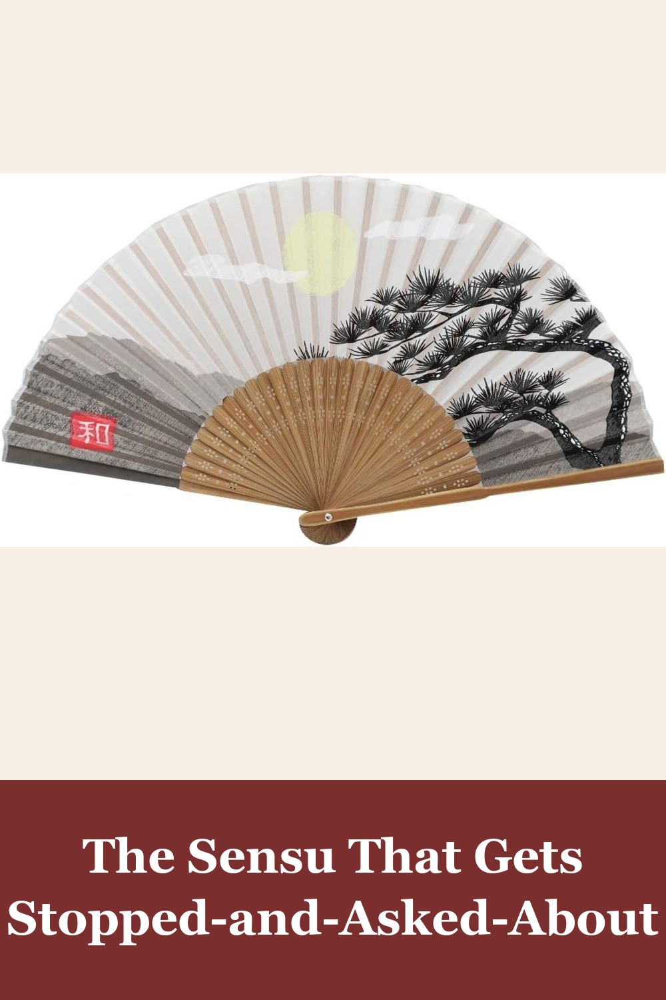
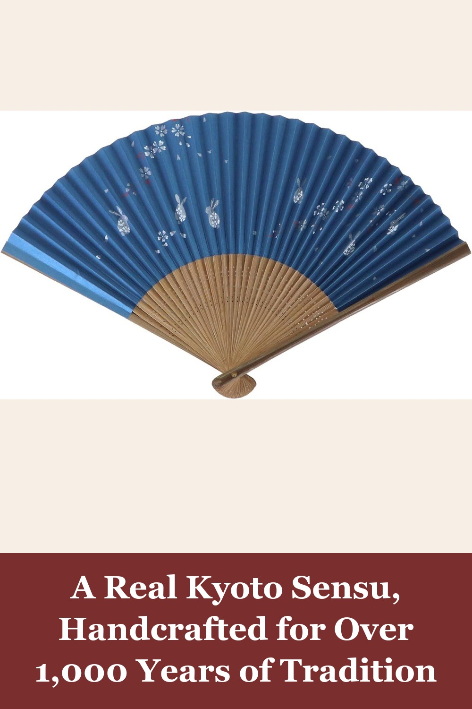
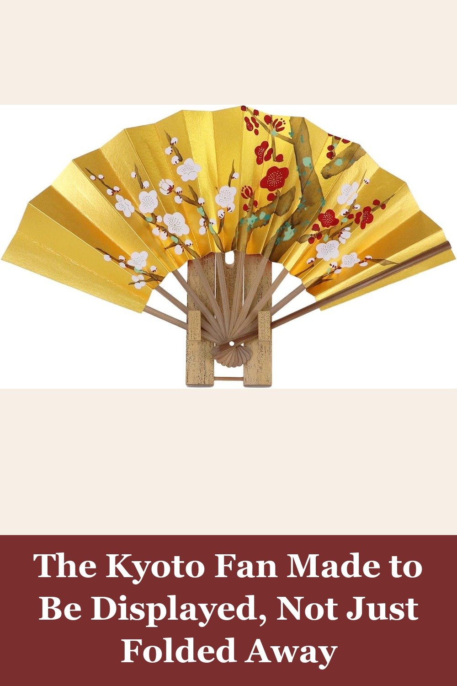

Terra Distribution Folding Fan [Japan Import], Handmade Bamboo and Silk
A genuine Japan-import folding fan, 100% handmade with silk and bamboo ribs. Compact enough to carry everywhere, striking enough to double as a wearable art piece — the kind of design detail people notice.
After recently watching the miniseries Shogun with my wife she really admired some of the fans used in the series. I decided to purchase a few for her. All were very nice and high quality. But this fan stood out to me the most due to design and very nice quality. She loved all three. Recommended for quality and authenticity.— verified Amazon buyer
View on Amazon →
kore-iiwa Kyoto Folding Fan, Rabbit and Cherry Blossoms
Traditional Japanese folding fan handcrafted in Kyoto by artisans continuing a craft that traces back to the Heian period. Bamboo ribs and washi paper, finished with an elegant rabbit-and-cherry-blossom motif — lightweight, foldable, and made for everyday use, not just display.
View on Amazon →
kore-iiwa Decorative Kyoto Folding Fan, Plum Blossom Design (with Stand)
Same Kyoto artisan craftsmanship as our folding sensu, built as a decorative piece with its own display stand — bamboo and washi paper finished in a refined plum-blossom design. A quiet, authentic accent for a shelf, entryway, or tea corner.
View on Amazon →